← Overall ranking · Lab gallery
F09 · Project Details — version ranking
Family task: Project details (/projects/{id}): follow one project (Khandesh Spice D2C E-Commerce Store) across Overview/Progress/Milestones/Deliverables/Messages/Files - know how complete it is, what is approved, what unlocks payment, and whether anything waits on you.
Baseline context: Captured position shared by all versions: 57% complete, Milestone 1 Storefront MVP & Catalog (Rs.30,000.00) approved, Milestone 2 Razorpay Checkout & Delhivery Integration in progress (due Oct 30, 2026), deliverables 0/0 approved, no payment due yet, daily progress feed empty as captured. Six tabs as routed (?tab=...).
Leading version(s): V2 · Confidence: medium — Complete screenshot set + interaction/axe/keyboard runs in one pinned environment; single evaluator; designed empty/loading/error states generally have no public trigger and were not observed unless a version's task notes say so; system-font fallback instead of Outfit.
Tie groups: V3, V4 (67.5–68.8) · Production comparison: Comparison place #6 of 6 at 42.5. Lab-only winner remains V2.
Lab-only scores
| Rank | Version | Total /100 | Task clarity (w25) | Usability (w20) | Visual craft (w15) | Responsive (w15) | Accessibility (w15) | Integrity (w10) | Major+ issues |
|---|---|---|---|---|---|---|---|---|---|
| #1 | V2 · Delivery Journey | 77.5 | 4 /4 | 3 /4 | 3 /4 | 3 /4 | 2 /4 | 3 /4 | 2 |
| #2 | V5 · Delivery Console | 71.2 | 3 /4 | 3 /4 | 3 /4 | 3 /4 | 2 /4 | 3 /4 | 2 |
| #3 | V3 · Your Moves | 67.5 | 4 /4 | 3 /4 | 3 /4 | 1 /4 | 2 /4 | 2 /4 | 1 |
| #4 | V4 · One Story | 68.8 | 3 /4 | 3 /4 | 3 /4 | 3 /4 | 2 /4 | 2 /4 | 2 |
| #5 | V1 · Classic Cockpit | 65.0 | 3 /4 | 3 /4 | 2 /4 | 3 /4 | 2 /4 | 2 /4 | 2 |
Formula: total = Σ(weight × score ÷ 4). Dimension scores are integers 0–4 against fixed anchors (25 task clarity · 20 usability · 15 visual craft · 15 responsive · 15 accessibility · 10 integrity). Totals within 2.0 form a practical group; ties are ordered by task clarity, fewer major/critical issues, then responsive score; exact ties after these checks share rank (=).
Production page report and comparison rank
Comparison place #6 of 6 at 42.5. Lab-only winner remains V2.
Live production reference. Same rubric, separate from lab version records. Not a lab template and not an automatic winner. Route: /projects/:id. Outcome: reviewed. Confidence: low.
| Comparison place | Page | Total /100 | Task clarity | Usability | Visual craft | Responsive | Accessibility | Integrity | Major+ issues |
|---|---|---|---|---|---|---|---|---|---|
| #6 | Production · /projects/:id | 42.5 | 1 /4 | 1 /4 | 2 /4 | 3 /4 | 2 /4 | 2 /4 | 1 |
The projects list opened, but no project detail page could be reached from a safe link or row. One earlier pass showed a Try again control on that list. This score is for the task not being openable in review, not for an inspected project layout.
Order if production is included
- V2 — 77.5 · comparison #1
- V5 — 71.2 · comparison #2
- V3 — 67.5 · comparison #3 · inside a 2.0-point group
- V4 — 68.8 · comparison #4 · inside a 2.0-point group
- V1 — 65.0 · comparison #5
- Production — 42.5 · comparison #6
Lab-only ranks in the table above are unchanged. Inside a 2.0-point group, task clarity, fewer major issues, then responsive score decide the comparison place.
Observed issues
- Project detail was not reachable from the reviewed list.
- Shared shell contrast finding.
Not observed
- Milestone, file, and message tabs on a project page were not seen.
Desktop document overflow was 0 on reviewed routes. An earlier mobile pass of accounts A and B also had no document overflow and a menu control; opening that menu was not proven. Dark mode was not activated. axe-core reported four serious color-contrast nodes on the shared shell. No production screenshot was stored. None stored. Production pages can contain account data.
Shared shell / family-wide findings
- All 5 use identical captured figures and honestly keep the payment gate locked; none invents progress entries (daily feed shows its empty state).
- Internal item codes leak in two versions ((A3) in V3's rail, (A15) in V4's digest copy).
- No horizontal scroll in V1/V2/V4/V5; V3 overflows by 200px at 390px; axe target-size flags small tab/chip targets in V1 x6.
Per-version evidence
#5 · V1 · Classic Cockpit — 65.0
Source (unmodified): client-portal-lab/families/F09-project-details/V1/index.html
· Raw evidence: review-evidence/raw/F09-V1-raw.json
Task clarity (3/4): Verdict banner states the whole position in one line (57% complete, Milestone 1 approved, Milestone 2 in progress, no payment due), but four overlapping status chips plus a separate progress bar repeat it three more times.
Usability (3/4): Milestones tab switches correctly with the right panel; the 6-tab cockpit structure is conventional. The C13 dialog of the concept was not separately opened in this run.
Visual craft (2/4): Chip clutter - In progress / 57% complete / milestones 1/2 / a truncated UUID chip - and a mobile topbar that squeezes a search pill until the breadcrumb truncates to 'Khandesh Spice...'.
Responsive (3/4): No horizontal scroll; verdict, progress and actions stay in the first mobile screen despite the busy header.
Accessibility (2/4): Axe contrast x4 + target-size x6 (tab/chip targets); tab semantics themselves are correct.
Integrity (2/4): A raw UUID (01a10a2b-5eaa-769e-a5d9-...) is displayed as client-facing metadata under the chips.
Interaction / task results (V1)
| Task | Result |
|---|---|
| T1_first_screen | H1='Khandesh Spice D2C E-Commerce Store'; see desktop/mobile top screenshots |
| T2_keyboard | 12/12 stops focus-styled, 12/12 in viewport |
| T3_core_desktop | pass via tab "Milestones" |
| T3_core_mobile | pass via tab "Milestones" |
| T4_theme | toggle: pass (dark false->true); dark capture applied=True |
| T5_demo_honesty | data-demo click produced no visible toast in probe |
| T6_mobile | h-scroll mobile=0; nav probe opened=True btnW=23; tap<24px=7 |
| T7_axe | desktop: color-contrast x4, target-size x6; dark: color-contrast x6, target-size x6 |
Issues (6)
- minor
F09-V1-I1axe desktop: color-contrast x4 (a[aria-current="page"] > span, .avatar > i) Fix any of the following: Element has insufficient color contrast of 4.33 (foreground color: #465fff, background color: (axe-core 4.10.2 desktop) - major
F09-V1-I2axe desktop: target-size x6 (.text-link[data-goto-tab="milestones"], button[data-goto-tab="deliverables"]) Fix any of the following: Target has insufficient size (115.4px by 18.6px, should be at least 24px by 24px) Target has (axe-core 4.10.2 desktop) - minor
F09-V1-I3axe dark: color-contrast x6 (a[aria-current="page"] > span, .avatar > i) Fix any of the following: Element has insufficient color contrast of 3.94 (foreground color: #5b7bff, background color: (axe-core 4.10.2 dark) - major
F09-V1-I4axe dark: target-size x6 (.text-link[data-goto-tab="milestones"], button[data-goto-tab="deliverables"]) Fix any of the following: Target has insufficient size (115.4px by 18.6px, should be at least 24px by 24px) Target has (axe-core 4.10.2 dark) - minor
F09-V1-I57 mobile tap targets under 24px, e.g. [{'text': 'Open navigation menu', 'w': 23, 'h': 36}, {'text': '← All projects', 'w': 99, 'h': 21}, {'text': 'View all milestones', 'w': 115, 'h': 19}] (raw tapTargetsMobile) - minor
F09-V1-I6Raw project UUID displayed in header meta (mobile/desktop screenshots)

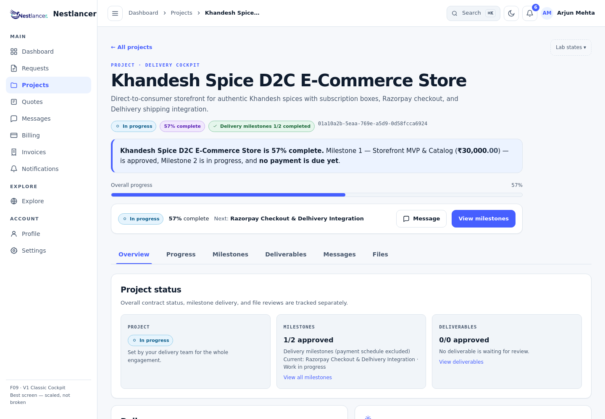

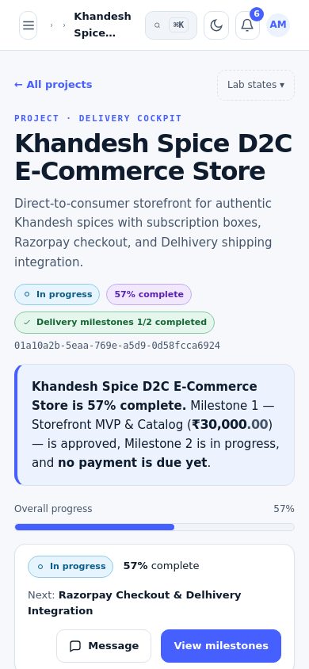

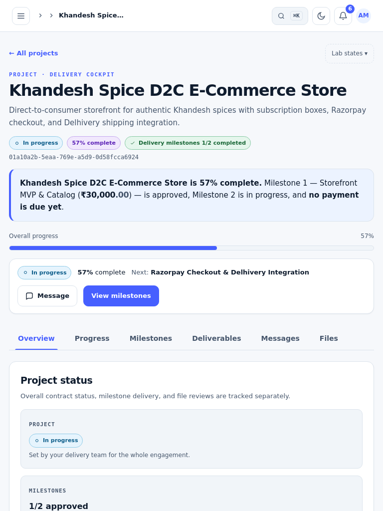

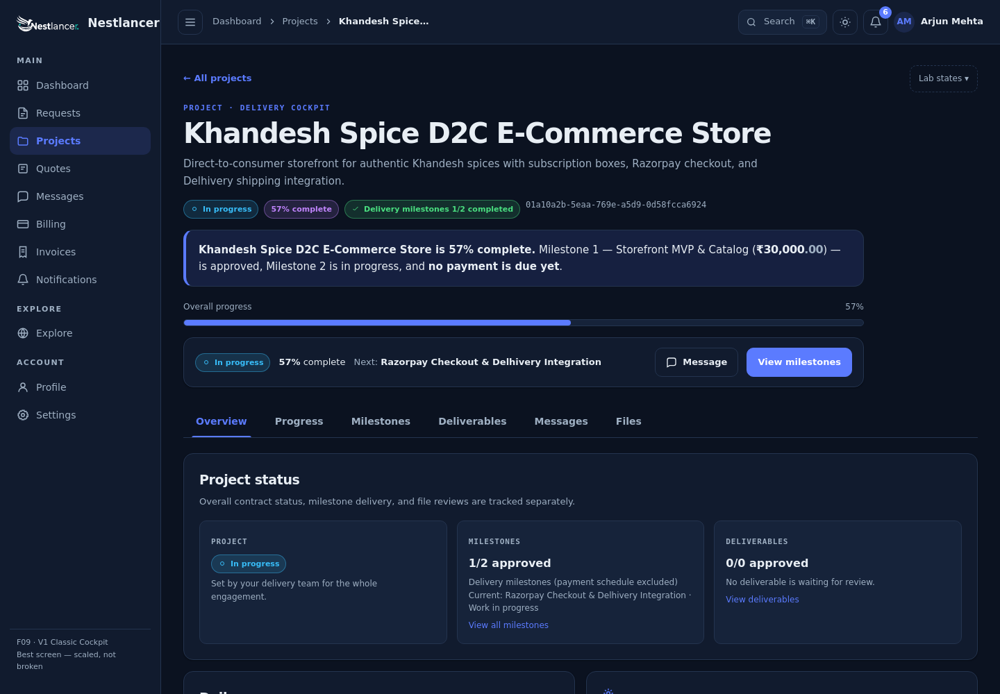

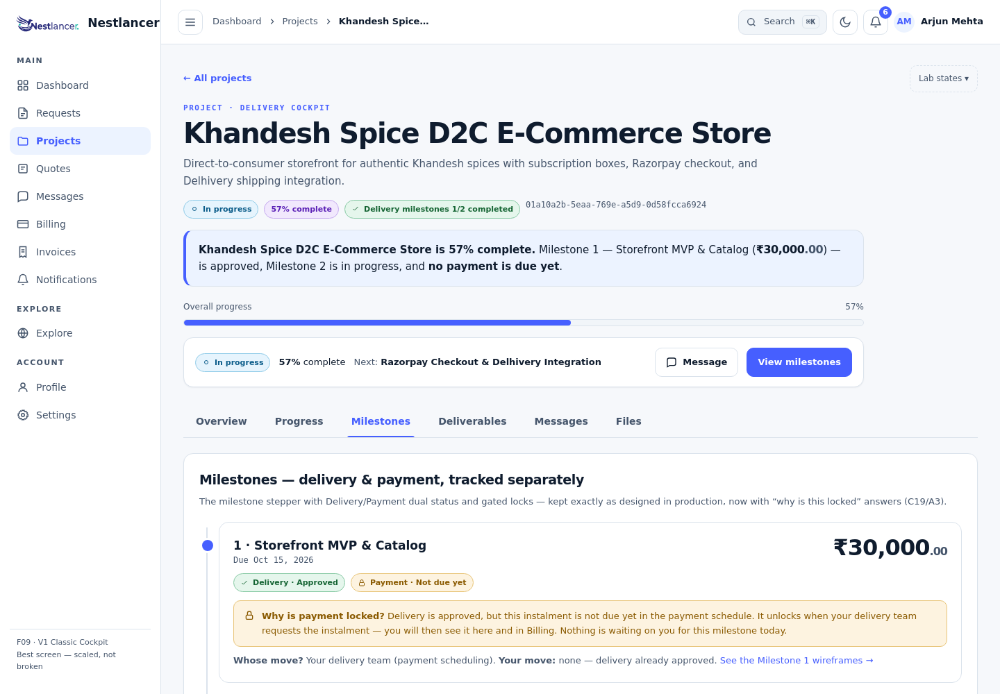


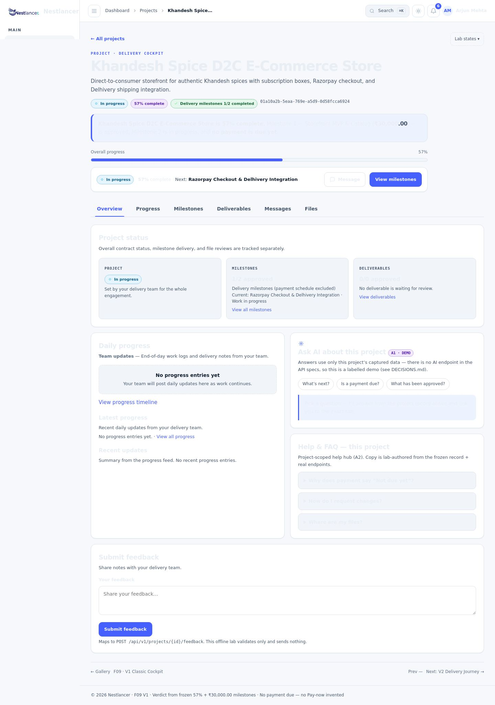
#1 · V2 · Delivery Journey — 77.5
Source (unmodified): client-portal-lab/families/F09-project-details/V2/index.html
· Raw evidence: review-evidence/raw/F09-V2-raw.json
Task clarity (4/4): Journey framing makes the commercial logic visible: Storefront MVP approved -> Razorpay integration in progress -> Payment gate locked until delivery approval, summed up as 'nothing is due from you today'.
Usability (3/4): Tab switch passes; journey steps are selectable and feed a detail line ('Milestone 1 is approved... Not due yet in the payment schedule').
Visual craft (3/4): Three-step journey card with lock iconography is the family's clearest single visual; tabs sit below without competing.
Responsive (3/4): Journey sentence and steps stack well; progress bar and status chips remain legible at 390px; no h-scroll.
Accessibility (2/4): Contrast x2 light (x5 dark) + target-size x2; steps carry text labels, not icon-only states.
Integrity (3/4): Explicitly 'the two captured milestones plus their payment gate - no extra milestones invented'. Money/dates consistent family-wide.
Interaction / task results (V2)
| Task | Result |
|---|---|
| T1_first_screen | H1='Khandesh Spice D2C E-Commerce Store'; see desktop/mobile top screenshots |
| T2_keyboard | 12/12 stops focus-styled, 12/12 in viewport |
| T3_core_desktop | pass via tab "Milestones" |
| T3_core_mobile | pass via tab "Milestones" |
| T4_theme | toggle: pass (dark false->true); dark capture applied=True |
| T5_demo_honesty | data-demo click produced no visible toast in probe |
| T6_mobile | h-scroll mobile=0; nav probe opened=True btnW=36; tap<24px=4 |
| T7_axe | desktop: color-contrast x2, target-size x2; dark: color-contrast x5, target-size x2 |
Issues (4)
- minor
F09-V2-I1axe desktop: color-contrast x2 (a[aria-current="page"] > span, .avatar > i) Fix any of the following: Element has insufficient color contrast of 4.33 (foreground color: #465fff, background color: (axe-core 4.10.2 desktop) - major
F09-V2-I2axe desktop: target-size x2 (.faq:nth-child(5) > summary, .faq:nth-child(6) > summary) Fix any of the following: Target has insufficient size (486px by 22.4px, should be at least 24px by 24px) Target has in (axe-core 4.10.2 desktop) - minor
F09-V2-I3axe dark: color-contrast x5 (a[aria-current="page"] > span, .avatar > i) Fix any of the following: Element has insufficient color contrast of 3.94 (foreground color: #5b7bff, background color: (axe-core 4.10.2 dark) - major
F09-V2-I4axe dark: target-size x2 (.faq:nth-child(5) > summary, .faq:nth-child(6) > summary) Fix any of the following: Target has insufficient size (486px by 22.4px, should be at least 24px by 24px) Target has in (axe-core 4.10.2 dark)

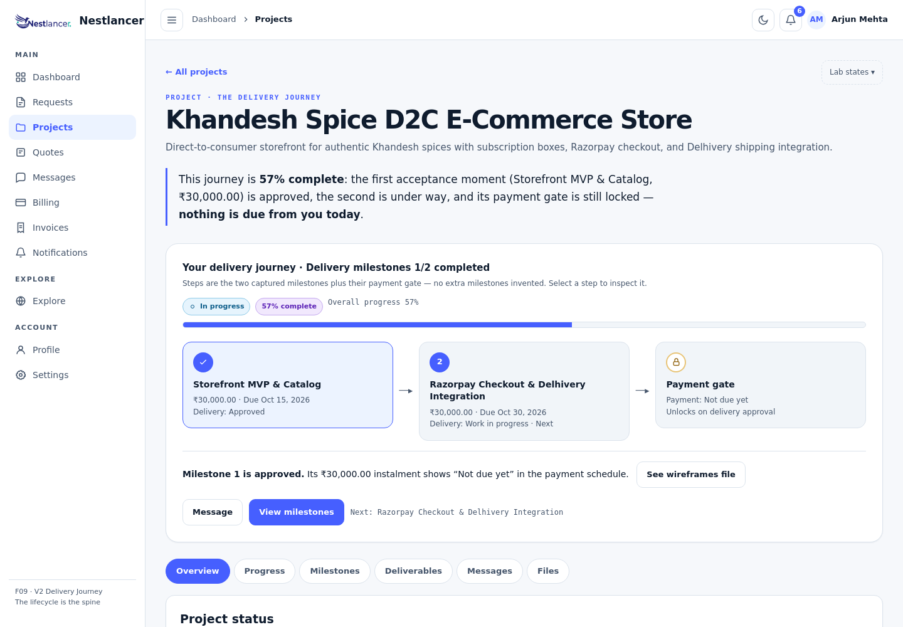

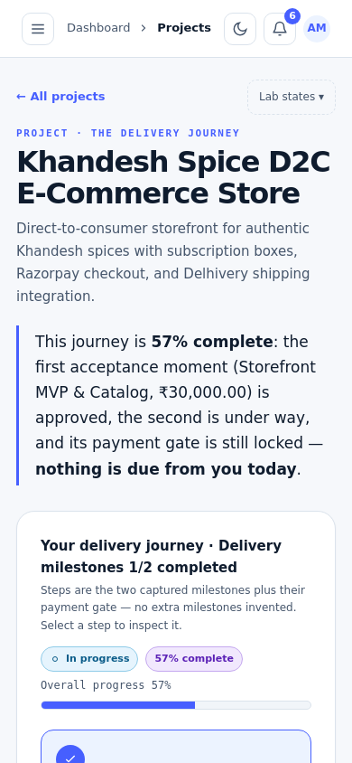

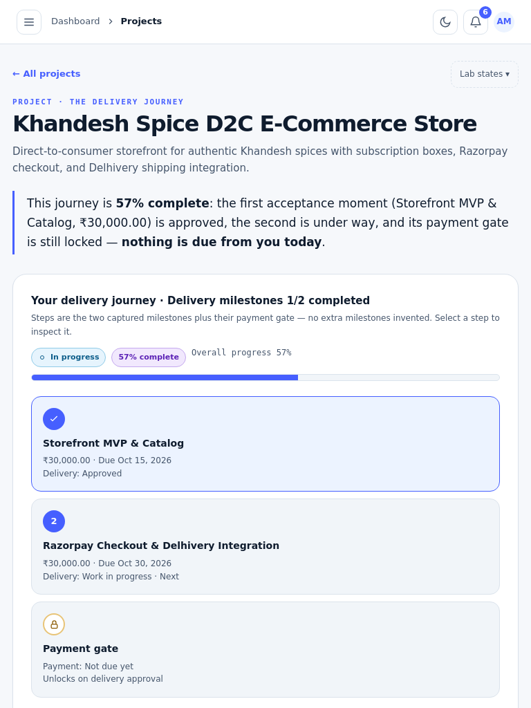

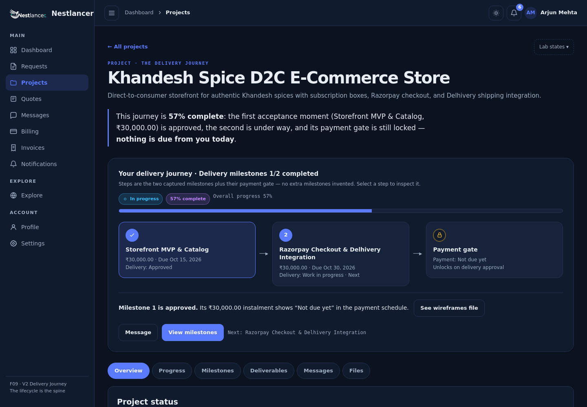

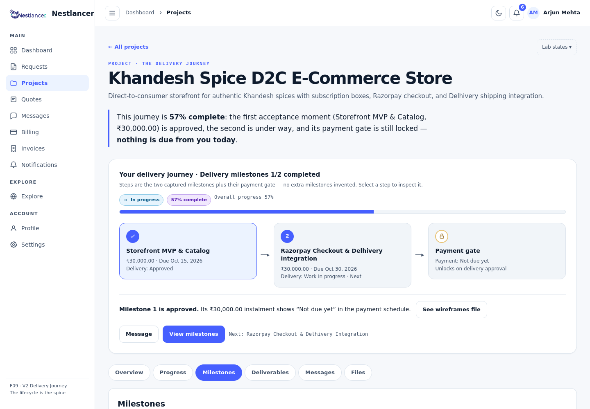


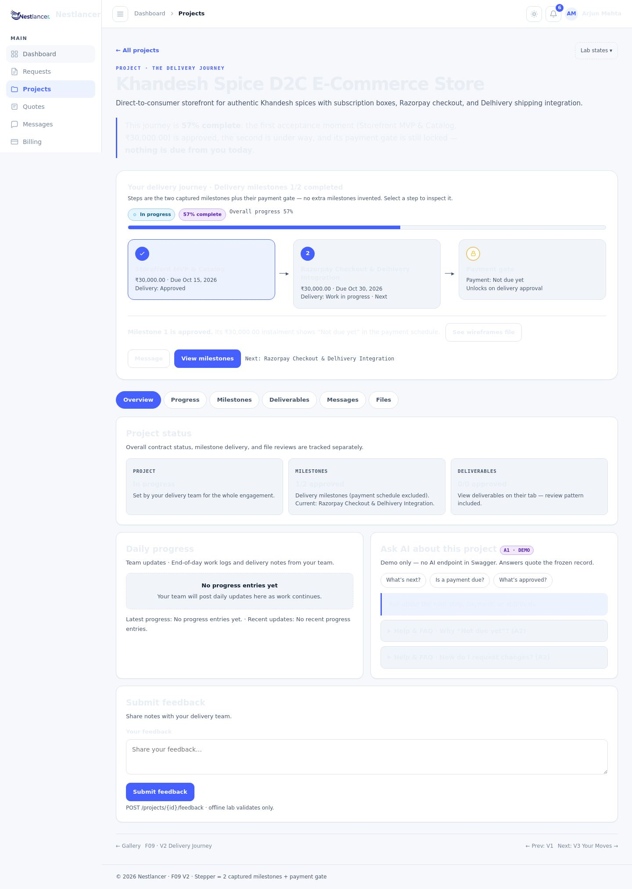
#3 · V3 · Your Moves — 67.5
Source (unmodified): client-portal-lab/families/F09-project-details/V3/index.html
· Raw evidence: review-evidence/raw/F09-V3-raw.json
Task clarity (4/4): 'Whose move is it?' rail answers the client's real question: Nothing waits on you today / Team's move: finish Milestone 2 / What unlocks payment - the clearest ownership model in the family.
Usability (3/4): Tabs pass; Message and View milestones sit by the status summary. The honest empty queue avoids fake urgency.
Visual craft (3/4): Verdict bar + status/daily-progress cards + rail are well composed in two columns.
Responsive (1/4): Rail stacks under the verdict, but at 390px the document overflows horizontally by 200px and the right side of the green queue text is clipped. Tablet and desktop have no measured page overflow.
Accessibility (2/4): Contrast x2 light, x5 dark; rail headings give the queue a clear text structure.
Integrity (2/4): Rail includes an 'Ask AI about this project (A3)' panel - internal item code in UI, and an AI affordance the small print must then disclaim ('No AI endpoint exists').
Interaction / task results (V3)
| Task | Result |
|---|---|
| T1_first_screen | H1='Khandesh Spice D2C E-Commerce Store'; see desktop/mobile top screenshots |
| T2_keyboard | 12/12 stops focus-styled, 12/12 in viewport |
| T3_core_desktop | pass via tab "Milestones" |
| T3_core_mobile | pass via tab "Milestones" |
| T4_theme | toggle: pass (dark false->true); dark capture applied=True |
| T5_demo_honesty | data-demo click produced no visible toast in probe |
| T6_mobile | h-scroll mobile=200; nav probe opened=True btnW=36; tap<24px=4 |
| T7_axe | desktop: color-contrast x2; dark: color-contrast x5 |
Issues (4)
- major
F09-V3-I1Horizontal page scroll at 390px (200px); rightmost: {'tag': 'DIV', 'cls': 'rail-card', 'right': 640} (raw overflow_mobile; F09-V3-mobile-light-top.png) - minor
F09-V3-I2axe desktop: color-contrast x2 (a[aria-current="page"] > span, .avatar > i) Fix any of the following: Element has insufficient color contrast of 4.33 (foreground color: #465fff, background color: (axe-core 4.10.2 desktop) - minor
F09-V3-I3axe dark: color-contrast x5 (a[aria-current="page"] > span, .avatar > i) Fix any of the following: Element has insufficient color contrast of 3.94 (foreground color: #5b7bff, background color: (axe-core 4.10.2 dark) - minor
F09-V3-I4Internal '(A3)' code + disclaimed Ask-AI panel in rail (desktop screenshot)

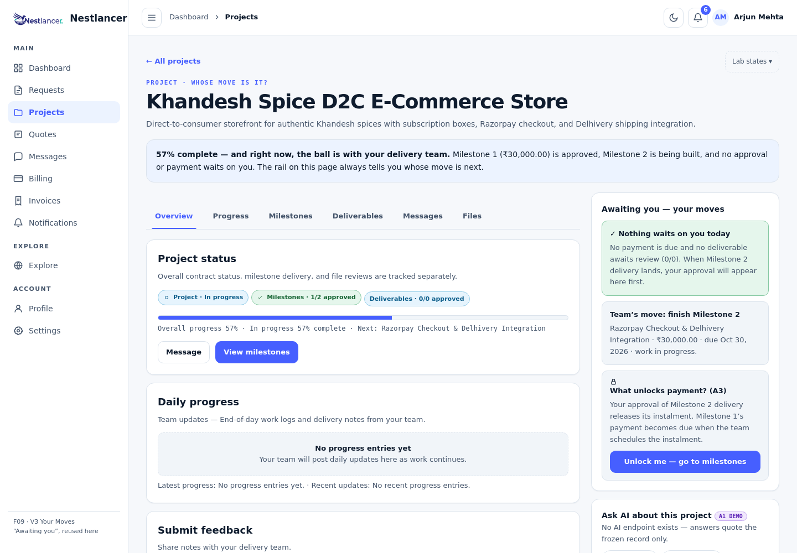

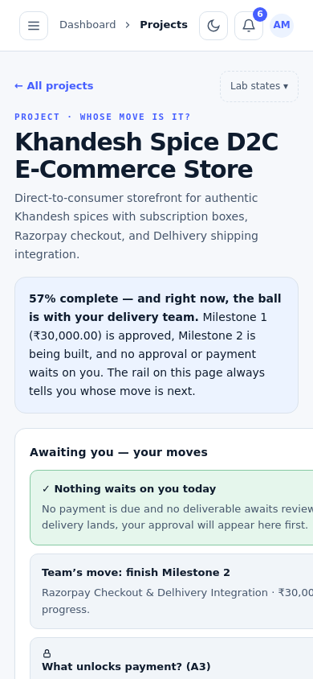

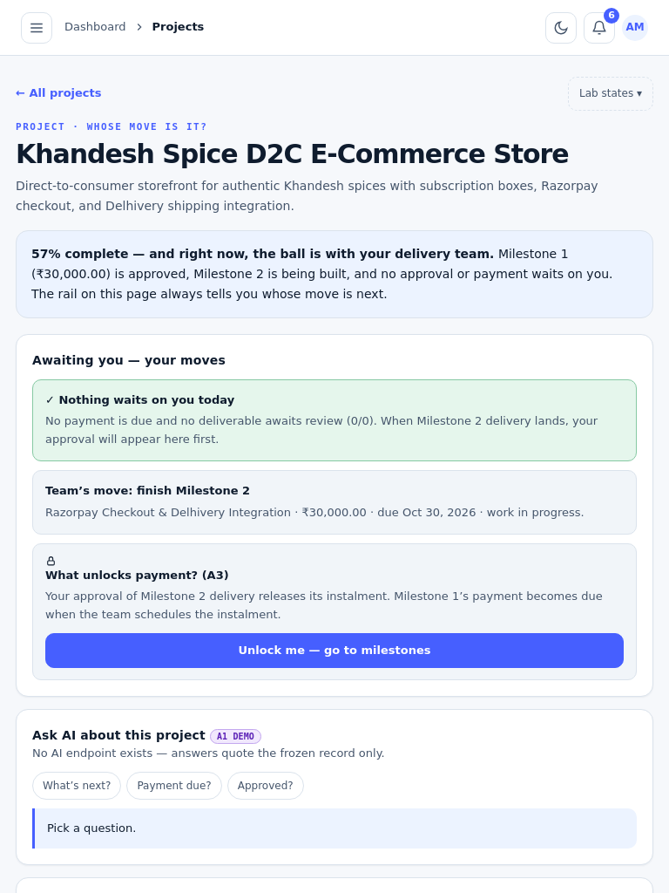

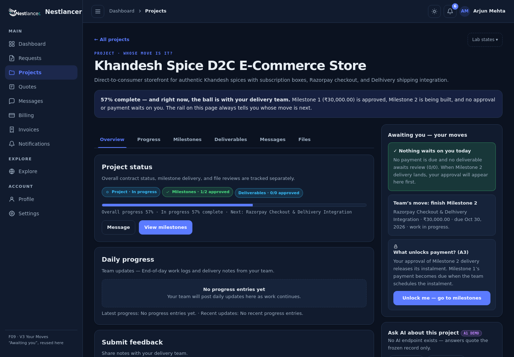

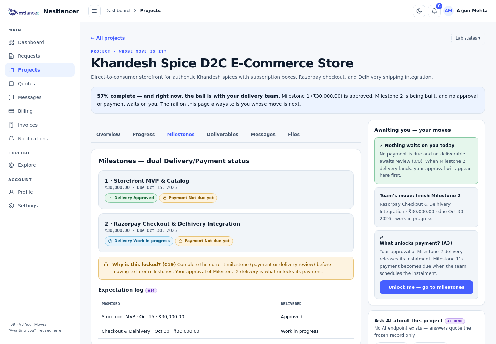


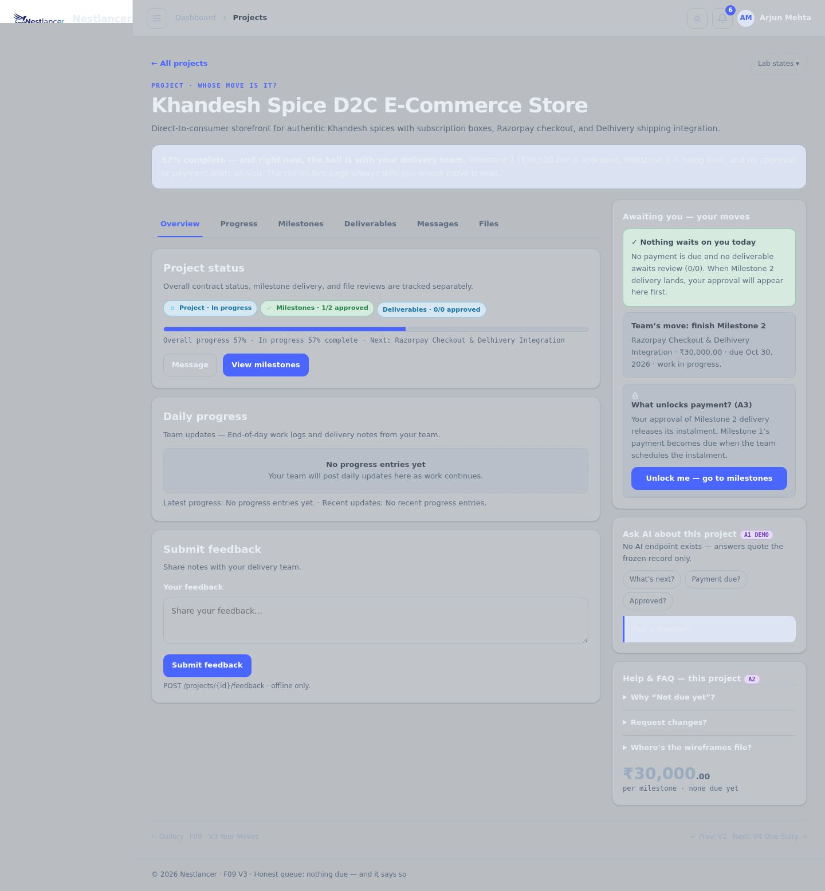
#4 · V4 · One Story — 68.8
Source (unmodified): client-portal-lab/families/F09-project-details/V4/index.html
· Raw evidence: review-evidence/raw/F09-V4-raw.json
Task clarity (3/4): Merged digest ('Everything, as it happened') reads the project as one chronological story with the same 57%/no-payment verdict up top; numbered chapter tabs preserve the six sections.
Usability (3/4): Milestones chapter opens correctly; digest reduces tab-hopping for 'what happened lately', at the cost of a longer overview (2,306px full page, family's longest).
Visual craft (3/4): Editorial chapter styling with timestamped digest entries (project starts, wireframes arrive) is coherent and calm.
Responsive (3/4): Story text and progress stay readable at 390px; actions Message/View milestones in first screen; no h-scroll.
Accessibility (2/4): Contrast x4 (x6 dark) + target-size x2; chapter tabs are numbered text, aiding orientation.
Integrity (2/4): Digest intro leaks an internal coverage code - 'merged into one activity digest (A15) - captured events only'.
Interaction / task results (V4)
| Task | Result |
|---|---|
| T1_first_screen | H1='Khandesh Spice D2C E-Commerce Store'; see desktop/mobile top screenshots |
| T2_keyboard | 12/12 stops focus-styled, 12/12 in viewport |
| T3_core_desktop | pass via tab "03Milestones" |
| T3_core_mobile | pass via tab "03Milestones" |
| T4_theme | toggle: pass (dark false->true); dark capture applied=True |
| T5_demo_honesty | data-demo click produced no visible toast in probe |
| T6_mobile | h-scroll mobile=0; nav probe opened=True btnW=36; tap<24px=4 |
| T7_axe | desktop: color-contrast x4, target-size x2; dark: color-contrast x6, target-size x2 |
Issues (5)
- minor
F09-V4-I1axe desktop: color-contrast x4 (a[aria-current="page"] > span, .avatar > i) Fix any of the following: Element has insufficient color contrast of 4.33 (foreground color: #465fff, background color: (axe-core 4.10.2 desktop) - major
F09-V4-I2axe desktop: target-size x2 (.faq:nth-child(5) > summary, .faq:nth-child(6) > summary) Fix any of the following: Target has insufficient size (1072px by 22.4px, should be at least 24px by 24px) Target has i (axe-core 4.10.2 desktop) - minor
F09-V4-I3axe dark: color-contrast x6 (a[aria-current="page"] > span, .avatar > i) Fix any of the following: Element has insufficient color contrast of 3.94 (foreground color: #5b7bff, background color: (axe-core 4.10.2 dark) - major
F09-V4-I4axe dark: target-size x2 (.faq:nth-child(5) > summary, .faq:nth-child(6) > summary) Fix any of the following: Target has insufficient size (1072px by 22.4px, should be at least 24px by 24px) Target has i (axe-core 4.10.2 dark) - minor
F09-V4-I5Internal '(A15)' coverage code in client copy (desktop screenshot)

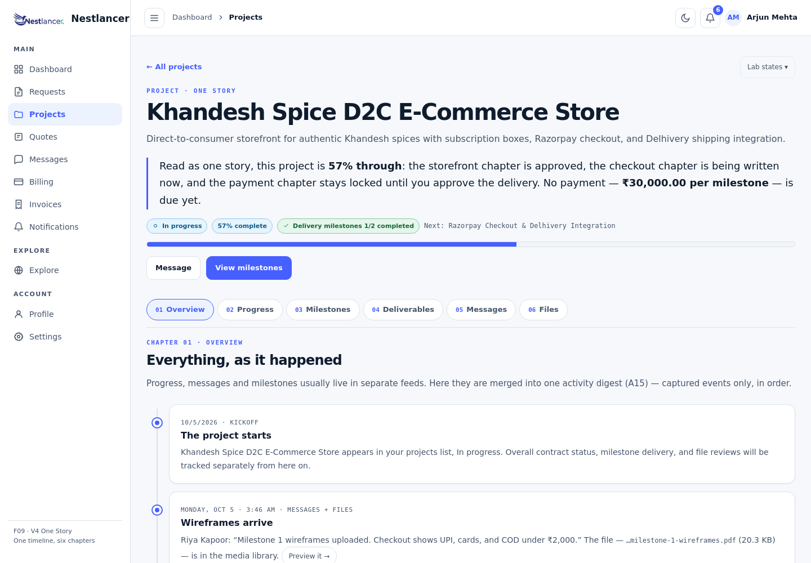

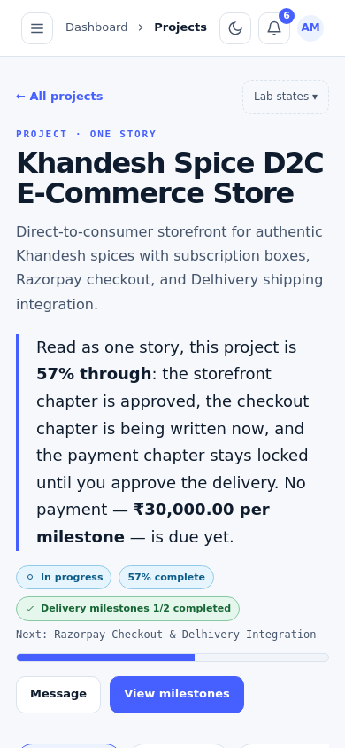

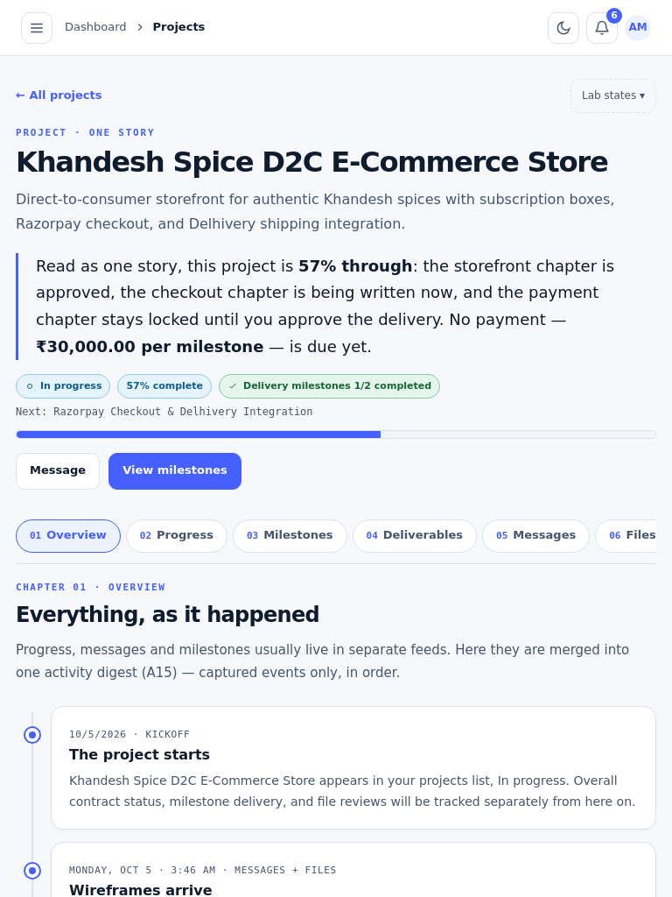

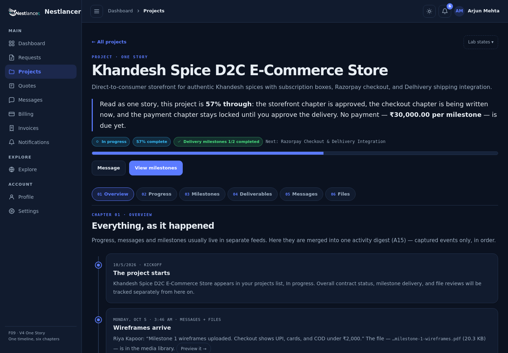

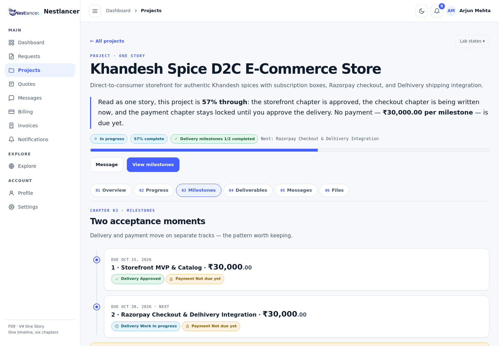

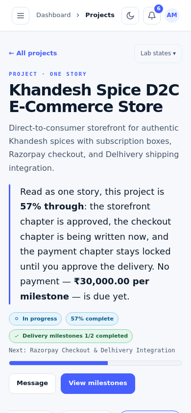

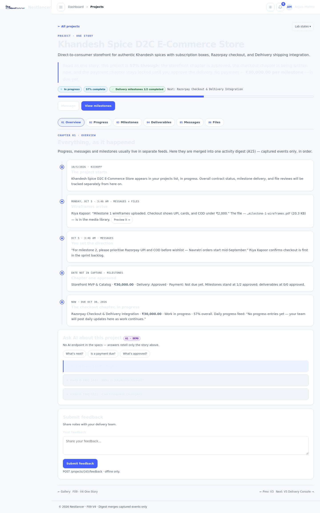
#2 · V5 · Delivery Console — 71.2
Source (unmodified): client-portal-lab/families/F09-project-details/V5/index.html
· Raw evidence: review-evidence/raw/F09-V5-raw.json
Task clarity (3/4): Stat strip (57% - 1/2 milestones - 0/0 deliverables - Rs.30,000 per milestone, none due) is the fastest numeric read; the 'Console verdict' sentence adds the so-what. 'Console' is operator jargon for clients.
Usability (3/4): Number-key tab switching (Press 1-6) plus a sticky-header milestones ops table; tab task passes. Shortcut behaviour while typing in fields not separately tested.
Visual craft (3/4): Tight KPI cards and status mini-cards; dark/light consistent.
Responsive (3/4): KPI strip becomes a perfect 2x2 on mobile; numbered tab pills scroll horizontally by design (Milestones pill peeks at the edge as affordance).
Accessibility (2/4): Contrast x2 light/x5 dark, target-size x2; number keys supplement rather than replace tab semantics.
Integrity (3/4): Verdict copy correctly separates healthy delivery track from gated/empty payment track 'by design', with due date Oct 30, 2026 named.
Interaction / task results (V5)
| Task | Result |
|---|---|
| T1_first_screen | H1='Khandesh Spice D2C E-Commerce Store'; see desktop/mobile top screenshots |
| T2_keyboard | 12/12 stops focus-styled, 12/12 in viewport |
| T3_core_desktop | pass via tab "3Milestones" |
| T3_core_mobile | pass via tab "3Milestones" |
| T4_theme | toggle: pass (dark false->true); dark capture applied=True |
| T5_demo_honesty | data-demo click produced no visible toast in probe |
| T6_mobile | h-scroll mobile=0; nav probe opened=True btnW=34; tap<24px=4 |
| T7_axe | desktop: color-contrast x2, target-size x2; dark: color-contrast x5, target-size x2 |
Issues (4)
- minor
F09-V5-I1axe desktop: color-contrast x2 (a[aria-current="page"] > span, .avatar > i) Fix any of the following: Element has insufficient color contrast of 4.33 (foreground color: #465fff, background color: (axe-core 4.10.2 desktop) - major
F09-V5-I2axe desktop: target-size x2 (.faq:nth-child(4) > summary, .faq:nth-child(5) > summary) Fix any of the following: Target has insufficient size (1114px by 19.2px, should be at least 24px by 24px) Target has i (axe-core 4.10.2 desktop) - minor
F09-V5-I3axe dark: color-contrast x5 (a[aria-current="page"] > span, .avatar > i) Fix any of the following: Element has insufficient color contrast of 3.94 (foreground color: #5b7bff, background color: (axe-core 4.10.2 dark) - major
F09-V5-I4axe dark: target-size x2 (.faq:nth-child(4) > summary, .faq:nth-child(5) > summary) Fix any of the following: Target has insufficient size (1114px by 19.2px, should be at least 24px by 24px) Target has i (axe-core 4.10.2 dark)

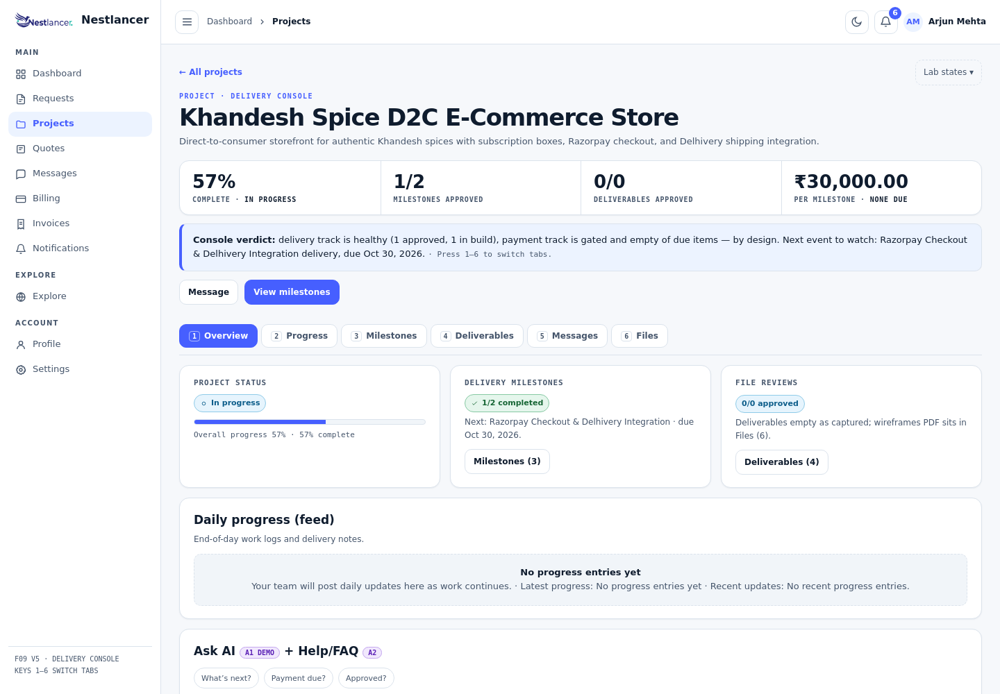

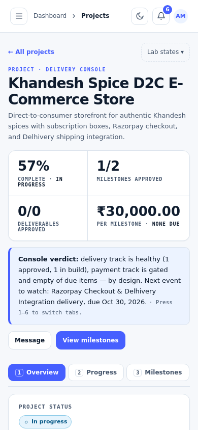

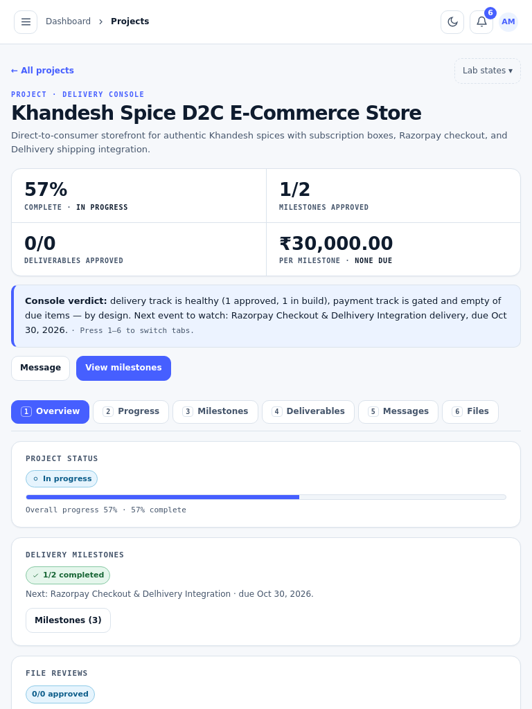

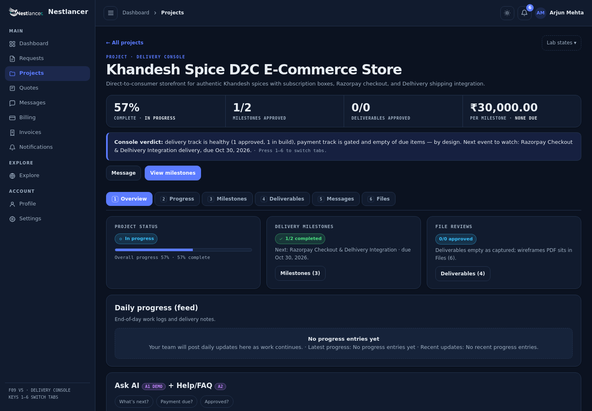

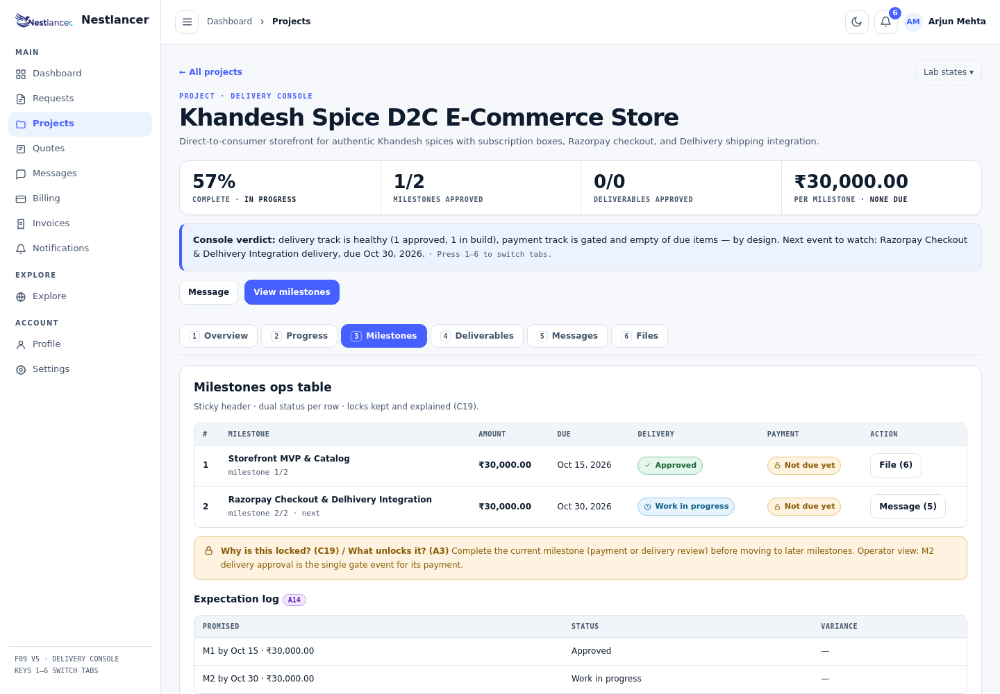

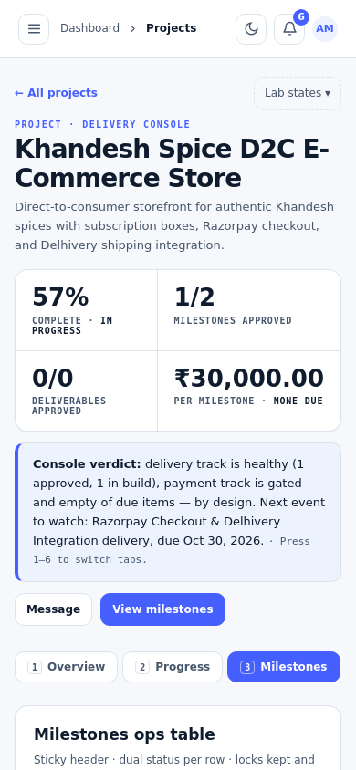

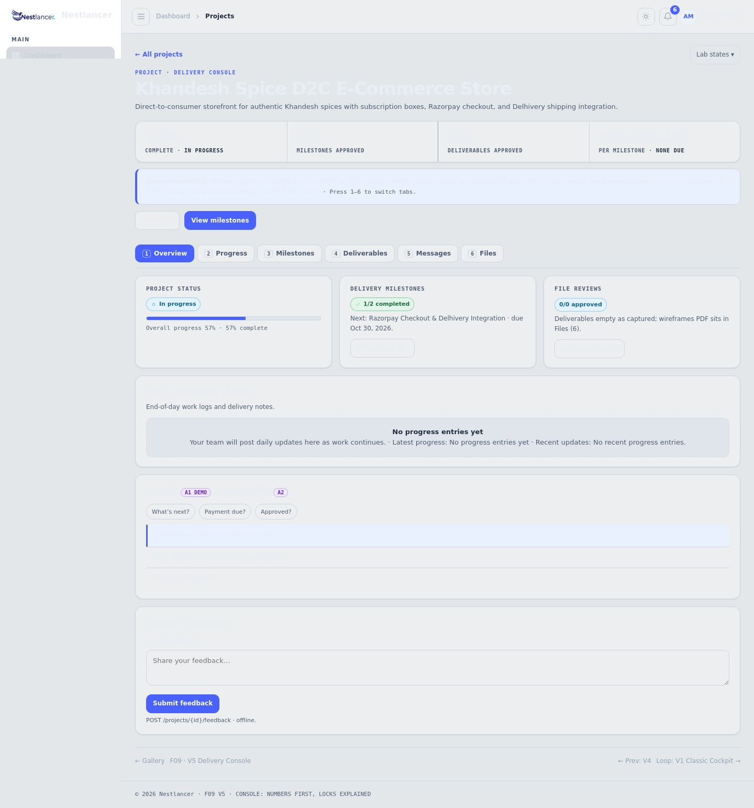
Blind comparison boards
Seeded labels A–E; the screenshots contain in-page version identifiers, so true blinding was incomplete. Mapping (review-evidence/raw/blind-mapping.json): A=V3 · B=V5 · C=V4 · D=V1 · E=V2.
One AI evaluator generated the board and mapping; board notes above were recorded in the session transcript before the mapping file was opened. This is a bias-reduction aid, not true experimental blinding.

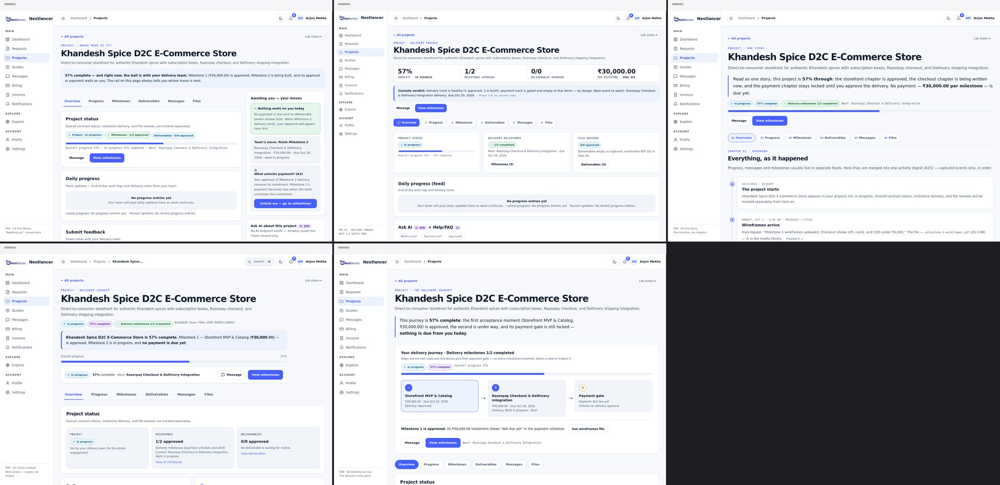

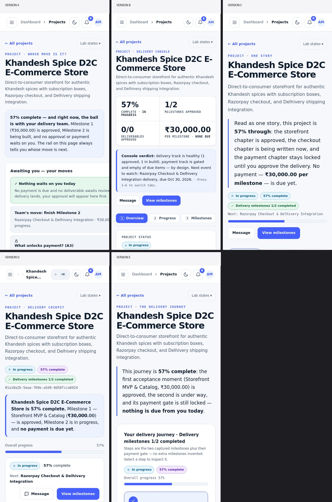
Pairwise consistency check (one evaluator, not votes)
| Pair | Better for family task | Reason |
|---|---|---|
| V1 vs V2 | V2 | Journey/gate model vs repeated chips |
| V1 vs V3 | V3 | Whose-move rail vs static cockpit |
| V1 vs V4 | V4 | Readable digest vs chip clutter (narrow) |
| V1 vs V5 | V5 | Stat strip speed vs redundancy |
| V2 vs V3 | V2 | Gate visualisation + cleaner integrity vs rail (closest pair; V3 wins when queue is non-empty) |
| V2 vs V4 | V2 | Inspectable steps vs long digest |
| V2 vs V5 | V2 | Causal journey vs numeric console (narrow) |
| V3 vs V4 | V3 | Ownership clarity vs chronology |
| V3 vs V5 | V5 | Rechecked after scoring: V3 has stronger ownership clarity but clips queue text with 200px mobile page overflow; V5 fits and therefore is preferred overall. |
| V4 vs V5 | V5 | Faster status read vs story scroll |
One evaluator's 10-pair consistency check (S4.2), not human votes; no Bradley-Terry/Elo applied. All 10 agree with the rubric order; the V1-V4 pair prompted the documented V4 task-clarity re-check.
Coverage, limitations, change log
Persona coverage (no votes): Coverage relevance only: shared mobile header/menu defect is most relevant to phone one-handed and motor-access profiles; 4.33:1 contrast to low-vision profiles; V4 missing H1 and V1 inert tab pattern to keyboard/screen-reader profiles; V3 duplicated payment to cognitive-access and first-time profiles; V5 context-thin density to first-time profiles. No persona preferred or voted.
Task script: Generic T1-T7 + family core: switch to the Milestones tab and verify selected tab + panel content (desktop+mobile).
- First-pass scores assigned from blind boards + raw evidence before reading prior winner claims (still unread).
- Corrected V3 responsive 3→1 after re-checking raw overflow and the full-resolution mobile screenshot: 200px page overflow clips queue text. Total 75.0→67.5; no critical cap because core tab was observed working.
Environment: Chromium 131.0.6778.33 (HeadlessChrome, Playwright bundled build chromium-1148) · Playwright 1.49.1 (pinned in review-evidence/tooling/package.json)
· axe-core 4.10.2 (pinned) · NOT cross-machine pixel-reproducible: no Docker in sandbox; pinned Playwright/Chromium used consistently for every page in this run.
Full record: review-evidence/review-manifest.json; machine data: review-evidence/scores.json.